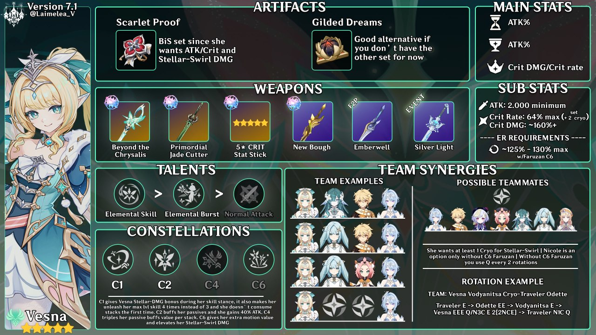
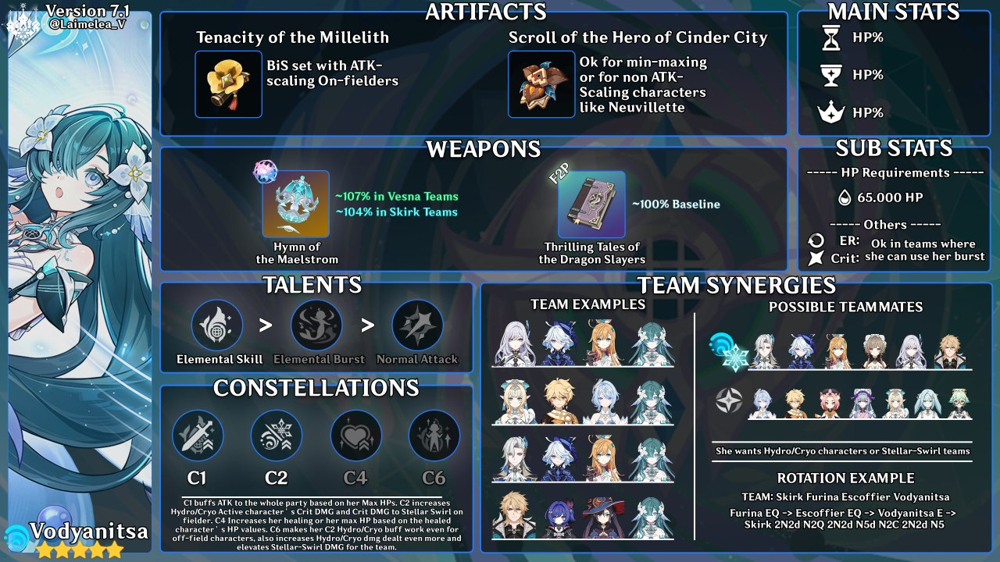

← JuanLab
Guida PG attuale
Trasmissione sbloccata tra
--g --h --m --s
Guide rapide · versione 7.1
Vesna & Vodyanitsa
Infografiche temporanee: fanno da placeholder finché non saranno pronte le guide complete… se mai lo saranno. Crediti a @Laimelea_V.

